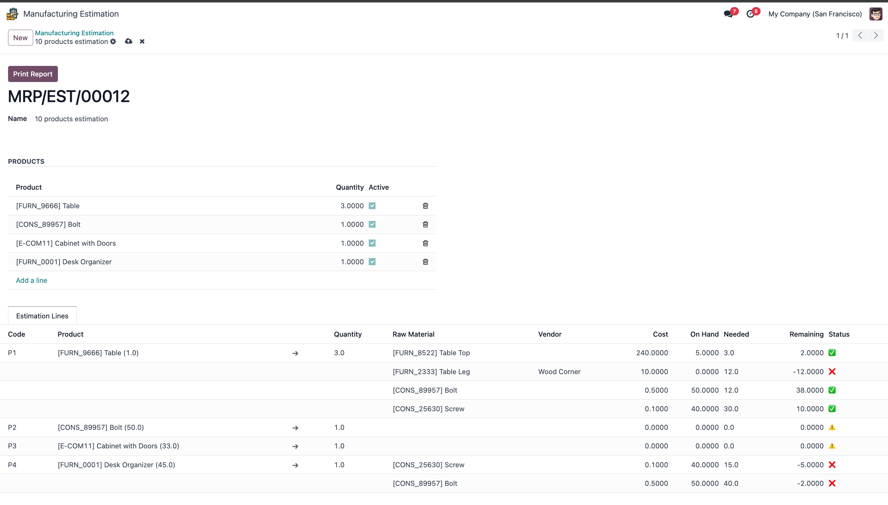

Manufacturing Estimation

Smart Raw Material Check Before Manufacturing
This module enhances the manufacturing process by providing clear visibility of raw material usage across multiple products before production begins.
🔹 Key Features:
- Select the main product — the Bill of Materials (BoM) and required quantities are fetched automatically.
- Instantly view available on-hand quantities for each raw material.
- The system calculates and displays how much of each material is already committed to other products.
- Understand exactly what's available and what's remaining — even when multiple main products use the same raw materials.
- Make informed decisions and avoid raw material shortages during production.
✅ Why Use This Module?
It helps manufacturing teams plan better by showing the impact of raw material usage across various products before launching production — minimizing delays, reducing waste, and improving stock transparency.